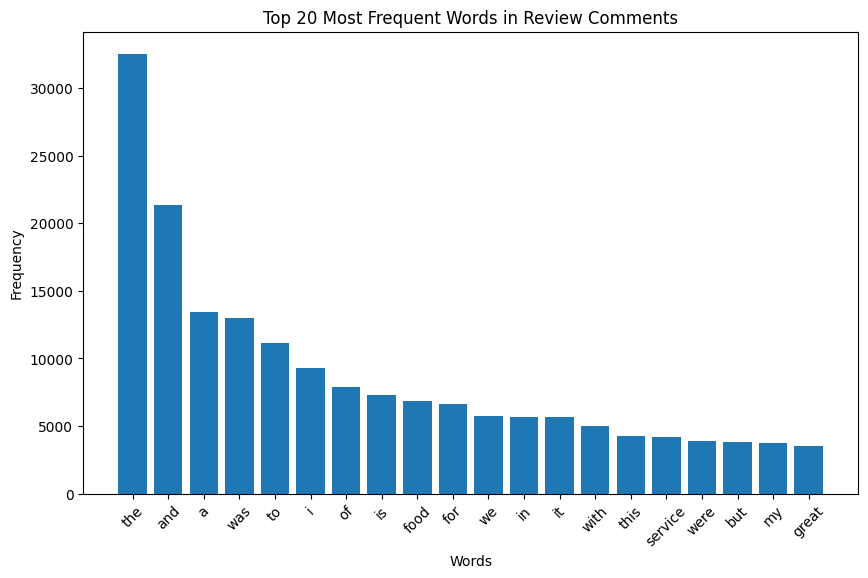

Right now, we are going to rank the restaurants by dating scores. To calculate the “Dating Score” for each restaurant using the metrics totalScore, reviewsCount, and the keyword/adjective counts extracted from the reviews. ## Process the Review Data First, we need to clean the review data and extract the key words we need for calculating the dating score.
!pip install requests
Requirement already satisfied: requests in /Users/luoxiaoyi/miniforge3/lib/python3.10/site-packages (2.31.0)
Requirement already satisfied: charset-normalizer<4,>=2 in /Users/luoxiaoyi/miniforge3/lib/python3.10/site-packages (from requests) (3.3.2)
Requirement already satisfied: idna<4,>=2.5 in /Users/luoxiaoyi/miniforge3/lib/python3.10/site-packages (from requests) (3.6)
Requirement already satisfied: urllib3<3,>=1.21.1 in /Users/luoxiaoyi/miniforge3/lib/python3.10/site-packages (from requests) (2.2.1)
Requirement already satisfied: certifi>=2017.4.17 in /Users/luoxiaoyi/miniforge3/lib/python3.10/site-packages (from requests) (2024.8.30)
import pandas as pdimport geopandas as gpdimport altair as altimport numpy as np!pip install cenpyimport cenpy
Intel MKL WARNING: Support of Intel(R) Streaming SIMD Extensions 4.2 (Intel(R) SSE4.2) enabled only processors has been deprecated. Intel oneAPI Math Kernel Library 2025.0 will require Intel(R) Advanced Vector Extensions (Intel(R) AVX) instructions.
Intel MKL WARNING: Support of Intel(R) Streaming SIMD Extensions 4.2 (Intel(R) SSE4.2) enabled only processors has been deprecated. Intel oneAPI Math Kernel Library 2025.0 will require Intel(R) Advanced Vector Extensions (Intel(R) AVX) instructions.
Requirement already satisfied: cenpy in /Users/luoxiaoyi/miniforge3/lib/python3.10/site-packages (1.0.1)
Requirement already satisfied: pandas in /Users/luoxiaoyi/miniforge3/lib/python3.10/site-packages (from cenpy) (2.2.2)
Requirement already satisfied: geopandas in /Users/luoxiaoyi/miniforge3/lib/python3.10/site-packages (from cenpy) (0.14.4)
Requirement already satisfied: requests in /Users/luoxiaoyi/miniforge3/lib/python3.10/site-packages (from cenpy) (2.31.0)
Requirement already satisfied: rtree in /Users/luoxiaoyi/miniforge3/lib/python3.10/site-packages (from cenpy) (1.3.0)
Requirement already satisfied: numpy in /Users/luoxiaoyi/miniforge3/lib/python3.10/site-packages (from cenpy) (1.26.4)
Requirement already satisfied: six in /Users/luoxiaoyi/miniforge3/lib/python3.10/site-packages (from cenpy) (1.16.0)
Requirement already satisfied: fuzzywuzzy in /Users/luoxiaoyi/miniforge3/lib/python3.10/site-packages (from cenpy) (0.18.0)
Requirement already satisfied: libpysal in /Users/luoxiaoyi/miniforge3/lib/python3.10/site-packages (from cenpy) (4.12.1)
Requirement already satisfied: fiona>=1.8.21 in /Users/luoxiaoyi/miniforge3/lib/python3.10/site-packages (from geopandas->cenpy) (1.10.1)
Requirement already satisfied: packaging in /Users/luoxiaoyi/miniforge3/lib/python3.10/site-packages (from geopandas->cenpy) (24.0)
Requirement already satisfied: pyproj>=3.3.0 in /Users/luoxiaoyi/miniforge3/lib/python3.10/site-packages (from geopandas->cenpy) (3.6.1)
Requirement already satisfied: shapely>=1.8.0 in /Users/luoxiaoyi/miniforge3/lib/python3.10/site-packages (from geopandas->cenpy) (2.0.6)
Requirement already satisfied: python-dateutil>=2.8.2 in /Users/luoxiaoyi/miniforge3/lib/python3.10/site-packages (from pandas->cenpy) (2.9.0)
Requirement already satisfied: pytz>=2020.1 in /Users/luoxiaoyi/miniforge3/lib/python3.10/site-packages (from pandas->cenpy) (2024.1)
Requirement already satisfied: tzdata>=2022.7 in /Users/luoxiaoyi/miniforge3/lib/python3.10/site-packages (from pandas->cenpy) (2024.1)
Requirement already satisfied: beautifulsoup4>=4.10 in /Users/luoxiaoyi/miniforge3/lib/python3.10/site-packages (from libpysal->cenpy) (4.12.3)
Requirement already satisfied: platformdirs>=2.0.2 in /Users/luoxiaoyi/miniforge3/lib/python3.10/site-packages (from libpysal->cenpy) (4.2.0)
Requirement already satisfied: scipy>=1.8 in /Users/luoxiaoyi/miniforge3/lib/python3.10/site-packages (from libpysal->cenpy) (1.14.1)
Requirement already satisfied: scikit-learn>=1.1 in /Users/luoxiaoyi/miniforge3/lib/python3.10/site-packages (from libpysal->cenpy) (1.5.2)
Requirement already satisfied: charset-normalizer<4,>=2 in /Users/luoxiaoyi/miniforge3/lib/python3.10/site-packages (from requests->cenpy) (3.3.2)
Requirement already satisfied: idna<4,>=2.5 in /Users/luoxiaoyi/miniforge3/lib/python3.10/site-packages (from requests->cenpy) (3.6)
Requirement already satisfied: urllib3<3,>=1.21.1 in /Users/luoxiaoyi/miniforge3/lib/python3.10/site-packages (from requests->cenpy) (2.2.1)
Requirement already satisfied: certifi>=2017.4.17 in /Users/luoxiaoyi/miniforge3/lib/python3.10/site-packages (from requests->cenpy) (2024.8.30)
Requirement already satisfied: soupsieve>1.2 in /Users/luoxiaoyi/miniforge3/lib/python3.10/site-packages (from beautifulsoup4>=4.10->libpysal->cenpy) (2.5)
Requirement already satisfied: attrs>=19.2.0 in /Users/luoxiaoyi/miniforge3/lib/python3.10/site-packages (from fiona>=1.8.21->geopandas->cenpy) (24.2.0)
Requirement already satisfied: click~=8.0 in /Users/luoxiaoyi/miniforge3/lib/python3.10/site-packages (from fiona>=1.8.21->geopandas->cenpy) (8.1.7)
Requirement already satisfied: click-plugins>=1.0 in /Users/luoxiaoyi/miniforge3/lib/python3.10/site-packages (from fiona>=1.8.21->geopandas->cenpy) (1.1.1)
Requirement already satisfied: cligj>=0.5 in /Users/luoxiaoyi/miniforge3/lib/python3.10/site-packages (from fiona>=1.8.21->geopandas->cenpy) (0.7.2)
Requirement already satisfied: joblib>=1.2.0 in /Users/luoxiaoyi/miniforge3/lib/python3.10/site-packages (from scikit-learn>=1.1->libpysal->cenpy) (1.4.2)
Requirement already satisfied: threadpoolctl>=3.1.0 in /Users/luoxiaoyi/miniforge3/lib/python3.10/site-packages (from scikit-learn>=1.1->libpysal->cenpy) (3.5.0)
/Users/luoxiaoyi/miniforge3/lib/python3.10/site-packages/fuzzywuzzy/fuzz.py:11: UserWarning: Using slow pure-python SequenceMatcher. Install python-Levenshtein to remove this warning
warnings.warn('Using slow pure-python SequenceMatcher. Install python-Levenshtein to remove this warning')
import pandas as pdfile_path ="data/restaurants_reviews_final.geojson"review = gpd.read_file(file_path)review.head()
title
price
categoryName
address
neighborhood
street
city
postalCode
state
location
totalScore
reviewsCount
url
review_text
latitude
longitude
geometry
0
Phil-Am Kusina
$10–20
Filipino restaurant
556 Tompkins Ave., Staten Island, NY 10305
Rosebank
556 Tompkins Ave.
Staten Island
10305
New York
{'lat': 40.6124623, 'lng': -74.071427}
4.7
320
https://www.google.com/maps/search/?api=1&quer...
I bring my family and friends here. Excellent ...
40.612462
-74.071427
POINT (-74.07143 40.61246)
1
Phil-Am Kusina
$10–20
Filipino restaurant
556 Tompkins Ave., Staten Island, NY 10305
Rosebank
556 Tompkins Ave.
Staten Island
10305
New York
{'lat': 40.6124623, 'lng': -74.071427}
4.7
320
https://www.google.com/maps/search/?api=1&quer...
I usually enjoy Filipino lechon kawali (fried ...
40.612462
-74.071427
POINT (-74.07143 40.61246)
2
Phil-Am Kusina
$10–20
Filipino restaurant
556 Tompkins Ave., Staten Island, NY 10305
Rosebank
556 Tompkins Ave.
Staten Island
10305
New York
{'lat': 40.6124623, 'lng': -74.071427}
4.7
320
https://www.google.com/maps/search/?api=1&quer...
Amazing food and amazing service. Every time I...
40.612462
-74.071427
POINT (-74.07143 40.61246)
3
Phil-Am Kusina
$10–20
Filipino restaurant
556 Tompkins Ave., Staten Island, NY 10305
Rosebank
556 Tompkins Ave.
Staten Island
10305
New York
{'lat': 40.6124623, 'lng': -74.071427}
4.7
320
https://www.google.com/maps/search/?api=1&quer...
What a gem in Staten Island. The food was abso...
40.612462
-74.071427
POINT (-74.07143 40.61246)
4
Phil-Am Kusina
$10–20
Filipino restaurant
556 Tompkins Ave., Staten Island, NY 10305
Rosebank
556 Tompkins Ave.
Staten Island
10305
New York
{'lat': 40.6124623, 'lng': -74.071427}
4.7
320
https://www.google.com/maps/search/?api=1&quer...
This is THE best tasting Philippines Restauran...
40.612462
-74.071427
POINT (-74.07143 40.61246)
!pip install folium matplotlib
Requirement already satisfied: folium in /Users/luoxiaoyi/miniforge3/lib/python3.10/site-packages (0.17.0)
Requirement already satisfied: matplotlib in /Users/luoxiaoyi/miniforge3/lib/python3.10/site-packages (3.9.2)
Requirement already satisfied: branca>=0.6.0 in /Users/luoxiaoyi/miniforge3/lib/python3.10/site-packages (from folium) (0.8.0)
Requirement already satisfied: jinja2>=2.9 in /Users/luoxiaoyi/miniforge3/lib/python3.10/site-packages (from folium) (3.1.4)
Requirement already satisfied: numpy in /Users/luoxiaoyi/miniforge3/lib/python3.10/site-packages (from folium) (1.26.4)
Requirement already satisfied: requests in /Users/luoxiaoyi/miniforge3/lib/python3.10/site-packages (from folium) (2.31.0)
Requirement already satisfied: xyzservices in /Users/luoxiaoyi/miniforge3/lib/python3.10/site-packages (from folium) (2024.9.0)
Requirement already satisfied: contourpy>=1.0.1 in /Users/luoxiaoyi/miniforge3/lib/python3.10/site-packages (from matplotlib) (1.3.0)
Requirement already satisfied: cycler>=0.10 in /Users/luoxiaoyi/miniforge3/lib/python3.10/site-packages (from matplotlib) (0.12.1)
Requirement already satisfied: fonttools>=4.22.0 in /Users/luoxiaoyi/miniforge3/lib/python3.10/site-packages (from matplotlib) (4.53.1)
Requirement already satisfied: kiwisolver>=1.3.1 in /Users/luoxiaoyi/miniforge3/lib/python3.10/site-packages (from matplotlib) (1.4.7)
Requirement already satisfied: packaging>=20.0 in /Users/luoxiaoyi/miniforge3/lib/python3.10/site-packages (from matplotlib) (24.0)
Requirement already satisfied: pillow>=8 in /Users/luoxiaoyi/miniforge3/lib/python3.10/site-packages (from matplotlib) (10.3.0)
Requirement already satisfied: pyparsing>=2.3.1 in /Users/luoxiaoyi/miniforge3/lib/python3.10/site-packages (from matplotlib) (3.1.4)
Requirement already satisfied: python-dateutil>=2.7 in /Users/luoxiaoyi/miniforge3/lib/python3.10/site-packages (from matplotlib) (2.9.0)
Requirement already satisfied: MarkupSafe>=2.0 in /Users/luoxiaoyi/miniforge3/lib/python3.10/site-packages (from jinja2>=2.9->folium) (2.1.5)
Requirement already satisfied: six>=1.5 in /Users/luoxiaoyi/miniforge3/lib/python3.10/site-packages (from python-dateutil>=2.7->matplotlib) (1.16.0)
Requirement already satisfied: charset-normalizer<4,>=2 in /Users/luoxiaoyi/miniforge3/lib/python3.10/site-packages (from requests->folium) (3.3.2)
Requirement already satisfied: idna<4,>=2.5 in /Users/luoxiaoyi/miniforge3/lib/python3.10/site-packages (from requests->folium) (3.6)
Requirement already satisfied: urllib3<3,>=1.21.1 in /Users/luoxiaoyi/miniforge3/lib/python3.10/site-packages (from requests->folium) (2.2.1)
Requirement already satisfied: certifi>=2017.4.17 in /Users/luoxiaoyi/miniforge3/lib/python3.10/site-packages (from requests->folium) (2024.8.30)
import matplotlib.pyplot as pltimport pandas as pdfrom collections import Counterimport re
Here is the distribution of the words that occur among reviews.
import matplotlib.pyplot as pltword_freq_df = pd.DataFrame(most_common_words, columns=['Word', 'Frequency'])plt.figure(figsize=(10, 6))plt.bar(word_freq_df['Word'], word_freq_df['Frequency'])plt.xticks(rotation=45)plt.title("Top 20 Most Frequent Words in Review Comments")plt.xlabel("Words")plt.ylabel("Frequency")plt.show()

dating_keywords = ['romantic', 'vibe', 'dating', 'love', 'date']dating_related_counts = {word: word_counts[word] for word in dating_keywords}print("Dating-related keywords and their counts:", dating_related_counts)
Dating-related keywords and their counts: {'romantic': 71, 'vibe': 260, 'dating': 5, 'love': 810, 'date': 194}
!pip install --upgrade nltk
Requirement already satisfied: nltk in /Users/luoxiaoyi/miniforge3/lib/python3.10/site-packages (3.9.1)
Requirement already satisfied: click in /Users/luoxiaoyi/miniforge3/lib/python3.10/site-packages (from nltk) (8.1.7)
Requirement already satisfied: joblib in /Users/luoxiaoyi/miniforge3/lib/python3.10/site-packages (from nltk) (1.4.2)
Requirement already satisfied: regex>=2021.8.3 in /Users/luoxiaoyi/miniforge3/lib/python3.10/site-packages (from nltk) (2024.11.6)
Requirement already satisfied: tqdm in /Users/luoxiaoyi/miniforge3/lib/python3.10/site-packages (from nltk) (4.66.2)
import nltkfrom nltk.tokenize import word_tokenizefrom nltk import pos_tagnltk.download('punkt_tab')nltk.download('averaged_perceptron_tagger_eng')tokens = word_tokenize(all_text_cleaned)tagged_words = pos_tag(tokens)adjectives = [word for word, tag in tagged_words if tag.startswith('JJ')]adjective_counts = Counter(adjectives)most_common_adjectives = adjective_counts.most_common(20)print("Most common adjectives:", most_common_adjectives)
[nltk_data] Downloading package punkt_tab to
[nltk_data] /Users/luoxiaoyi/nltk_data...
[nltk_data] Package punkt_tab is already up-to-date!
[nltk_data] Downloading package averaged_perceptron_tagger_eng to
[nltk_data] /Users/luoxiaoyi/nltk_data...
[nltk_data] Unzipping taggers/averaged_perceptron_tagger_eng.zip.
dating_related_adjectives = ['romantic', 'cozy', 'intimate', 'lovely', 'beautiful', 'quiet', 'charming', 'private', 'ambiance', 'special', 'memorable','love']dating_adjective_counts = {word: adjective_counts[word] for word in dating_related_adjectives if word in adjective_counts}print("Dating-related adjectives and their counts:", dating_adjective_counts)
[nltk_data] Downloading package punkt to /Users/luoxiaoyi/nltk_data...
[nltk_data] Package punkt is already up-to-date!
[nltk_data] Downloading package averaged_perceptron_tagger to
[nltk_data] /Users/luoxiaoyi/nltk_data...
[nltk_data] Package averaged_perceptron_tagger is already up-to-
[nltk_data] date!
True
def extract_dating_counts(reviews): all_text =" ".join(reviews) tokens = word_tokenize(all_text.lower()) tagged_words = pos_tag(tokens) word_counts = Counter(tokens) adjective_counts = Counter(word for word, tag in tagged_words if tag.startswith('JJ')) keyword_score =sum(word_counts[word] for word in dating_keywords if word in word_counts) adjective_score =sum(adjective_counts[word] for word in dating_related_adjectives if word in adjective_counts)return keyword_score, adjective_score
Top Restaurants by Dating Score:
title totalScore reviewsCount \
51 Fogo de Chão Brazilian Steakhouse 0.904762 0.876397
87 Le Coucou 0.761905 0.278665
35 Daniel 0.809524 0.347333
108 Nan Xiang Soup Dumplings - Flushing 0.761905 1.000000
144 Supper Club By Le Petit Parisien 1.000000 0.008464
.. ... ... ...
110 New Mulan 0.428571 0.119291
8 Arirang 0.428571 0.058927
139 Shimiaodao Noodle 0.428571 0.039125
93 MJ USA 東旺飯店 0.238095 0.027467
39 E.A.T. 0.000000 0.168157
combinedScore DatingScore Rank
51 0.30 0.714824 1.0
87 0.94 0.670361 2.0
35 0.74 0.650009 3.0
108 0.12 0.640762 4.0
144 0.78 0.636539 5.0
.. ... ... ...
110 0.06 0.225216 175.0
8 0.10 0.219107 176.0
139 0.04 0.195166 177.0
93 0.02 0.109478 178.0
39 0.02 0.056447 179.0
[179 rows x 6 columns]
import geopandas as gpdoutput_path ="/Users/luoxiaoyi/Downloads/24fall-python-final-proposal-kuma_chloe_wenjun_finalproposal-main/pythonfinal/data/DatingScore.csv"aggregated_df.to_csv(output_path, index=False)print(f"File successfully saved to: {output_path}")
File successfully saved to: /Users/luoxiaoyi/Downloads/24fall-python-final-proposal-kuma_chloe_wenjun_finalproposal-main/pythonfinal/data/DatingScore.csv